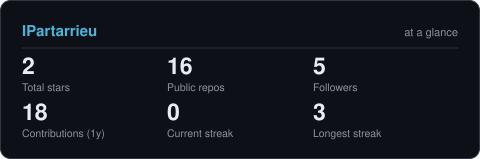
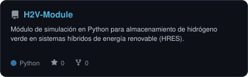
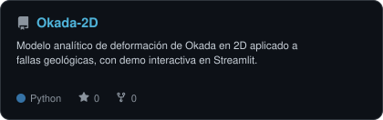
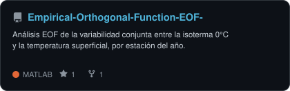
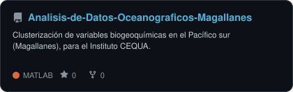

🔗 LinkedIn
✉️ Correo
MetGeo
Disponible para nuevas oportunidades
Sobre mí
Geofísico y Magíster en Geofísica (mención en Modelación Geofísica, Universidad de Concepción). Trabajo de forma independiente junto a MetGeo, desarrollando soluciones de modelación y análisis geofísico, con foco en resiliencia climática y sistemas de energía renovable.
- 📄 Primer autor del artículo "Energy Transition from Chilean Patagonia: Optimal Sizing of a Hybrid Renewable Energy System", Journal of Energy Storage (2026) — DOI.
- 🎓 Docente en Universidad de Concepción (Meteorología Dinámica y Sinóptica) y Universidad Católica de Temuco (Física de la Atmósfera y el Océano).
- 🔋 Desarrollo de módulos de simulación de almacenamiento de hidrógeno verde para sistemas híbridos de energía renovable (HRES) — ver
H2V-Module. - 🌊 Análisis de datos oceanográficos y atmosféricos para proyectos de investigación (Instituto CEQUA, MERIC by ENERGIAMARINA).
Stack técnico
Radar de habilidades


En números

Proyectos destacados




Contacto
- Correo: ipartarrieua@gmail.com
- LinkedIn: ignacio-partarrieu-andrade
- MetGeo: LinkedIn